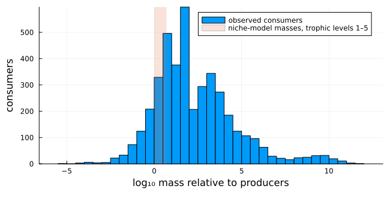

The stability dimensions of Domínguez-García et al. (2019) come from niche-model food webs. A common criticism is that correlations among metrics then describe that ensemble of webs, not real communities. This vignette swaps the network: the same bioenergetic dynamics and the same 27 metrics run on observed topologies from GATEWAy v1.0 (Brose et al. 2019).
The data: 290 observed webs with binary feeding links and body masses, downloaded when the vignette is rendered.
Two preparations are needed:
taxa with identical prey and predators must be merged into trophic species;
the model’s own masses must replace the measured ones.
Each is shown before it is used.
The comparison: metric values and the correlation structure of observed webs against the niche-model ensemble of the simulated-ensemble vignette, judged against the noise from splitting the observed webs in half.
using DominguezGarcia2019
using FoodWebDynamics
using CSV, DataFrames, Statistics, Random, Printf
using Plots
using Downloads, SHA, p7zip_jll
using LinearAlgebra: BLAS
BLAS.set_num_threads(1) # Julia threads run the webs; BLAS threads would oversubscribe
data = joinpath(pkgdir(DominguezGarcia2019), "data")
GATEWAy v1.0 is published by iDiv under CC BY 4.0 (doi:10.25829/IDIV.283-3-756). It is too large to ship with the package (a 96 MB table), so it is downloaded once and cached.
Where:~/.cache/DominguezGarcia2019/gateway, or the directory in ENV["GATEWAY_CACHE"]. To use a copy you already have, set ENV["GATEWAY_CSV"] to its path.
Check: the table’s SHA-256 is verified. The zip itself is rebuilt by the server on each request, so its checksum changes and is not checked.
Offline: the vignette stops with a message saying how to supply the file.
const GATEWAY_URL = "https://idata.idiv.de/ddm/Data/DownloadZip/283?version=756"
const GATEWAY_FILE = "283_2_FoodWebDataBase_2018_12_10.csv"
const GATEWAY_SHA256 = "0862d9f94bd144cb33a635e905bfab186236b122a773236d2521970bf2e9032f"
function gateway_csv()
path = get(ENV, "GATEWAY_CSV", "")
if isempty(path)
root = get(ENV, "XDG_CACHE_HOME", joinpath(homedir(), ".cache"))
cache = get(ENV, "GATEWAY_CACHE", joinpath(root, "DominguezGarcia2019", "gateway"))
path = joinpath(cache, GATEWAY_FILE)
if !isfile(path)
mkpath(cache)
zip = joinpath(cache, "gateway.zip")
# the server assembles the zip on request and sends nothing for about 30 s
dl = Downloads.Downloader()
dl.easy_hook = (easy, _) -> Downloads.Curl.setopt(easy, Downloads.Curl.CURLOPT_LOW_SPEED_TIME, 300)
try
Downloads.download(GATEWAY_URL, zip; downloader = dl, timeout = 900)
catch err
error("Could not download GATEWAy from $GATEWAY_URL: ", first(sprint(showerror, err), 200),
"\nDownload it by hand, extract $GATEWAY_FILE and set ENV[\"GATEWAY_CSV\"] to its path.")
end
run(`$(p7zip_jll.p7zip()) e $zip $GATEWAY_FILE -o$cache -y -bso0 -bsp0`)
rm(zip)
end
end
h = bytes2hex(open(sha256, path))
h == GATEWAY_SHA256 || error("$path has SHA-256 $h, not that of the GATEWAy v1.0 link table")
return path
end
read_gateway (from FoodWebDynamics) builds one web per foodweb.name. It strips names, drops exact duplicate links, takes a node’s mass as the geometric mean over its links (masses are recorded per link and life stage) and keeps detritus and other non-living resources as basal nodes.
taxa_webs = read_gateway(gateway_csv())
combine(groupby(DataFrame(ecosystem = [w.ecosystem for w in taxa_webs],
taxa = [richness(w.web) for w in taxa_webs],
nonliving = [count(.!w.living) for w in taxa_webs]), :ecosystem),
nrow => :webs, :taxa => median => :median_taxa, :nonliving => (x -> mean(x .> 0)) => :share_with_detritus)
In the bioenergetic model a species’ parameters follow from its links and trophic level. Two taxa with the same prey and the same predators are therefore identical. If both survive, the community can shift biomass from one to the other at no cost: the Jacobian has an eigenvalue 0, resilience is 0, and the sensitivity and variance metrics diverge. An earlier run on the published nodes found this in over a quarter of the converged communities.
trophic_species merges such taxa, repeating until no two nodes share both sets. This is also the unit Williams & Martinez (2000) used to compare the niche model with observed webs.
webs = trophic_species.(taxa_webs)
kept = [richness(t.web) / richness(w.web) for (t, w) in zip(webs, taxa_webs)]
usable = [k for (k, w) in enumerate(webs) if richness(w.web) ≤ 120 && trophic_levels(w.web) !== nothing]
(webs_with_redundant_taxa = mean(kept .< 1), median_share_of_nodes_kept = median(kept),
usable_webs = length(usable))
Redundancy is the rule. Almost every web has taxa with identical links, and aggregation keeps about two thirds of the nodes.
Usable webs have at most 120 trophic species (the largest niche-model webs have 110 initial species) and defined trophic levels (a web whose consumers form a closed loop with no path to a basal node has none).
GATEWAy records body masses, so the obvious choice is to use them. Under the paper’s rate scalings that fails:
the attack rate scales as aᵢⱼ ∝ mᵢ^0.7 and the handling time as hᵢⱼ ∝ mᵢ^−0.6 mⱼ^0.5;
a consumer’s maximum intake per unit biomass is about 1/(hᵢⱼ mᵢ) ∝ mᵢ^−0.4 mⱼ^−0.5;
its metabolic loss scales as mᵢ^−0.25.
So intake falls behind metabolism as mass grows. In niche-model webs masses are Z^(L−1) with Z = 1.5, a few units at most, and the gap is small. Observed consumers are far heavier relative to their producers. Below, each consumer’s mass is divided by the geometric mean mass of its web’s living producers (relative_masses), over the usable webs that record a mass for every consumer.
ratios = reduce(vcat, [m[.!isbasal(webs[k].web)] for k in usable for m in (relative_masses(webs[k]),) if m !== nothing])
q = quantile(ratios, [0.1, 0.5, 0.9])
sci(x) = (e = floor(Int, log10(x)); string(round(Int, x / 10.0^e), "×10", map(c -> "⁰¹²³⁴⁵⁶⁷⁸⁹"[nextind("⁰¹²³⁴⁵⁶⁷⁸⁹", 0, c - '0' + 1)], string(e))))
@printf("consumer mass / producer mass over %d consumers: 10%% %.3g, median %.3g, 90%% %.3g\n", length(ratios), q...)
histogram(log10.(ratios); bins = 60, label = "observed consumers", xlabel = "log₁₀ mass relative to producers",
ylabel = "consumers", size = (650, 330))
vspan!([0, log10(1.5^4)]; alpha = 0.2, label = "niche-model masses, trophic levels 1–5")
consumer mass / producer mass over 4180 consumers: 10% 0.757, median 66.2, 90% 2.07e+05

The median consumer is 66 times heavier than its producers, and one in ten is more than 2×10⁵ times heavier. Niche-model masses stay below 1.5⁴ ≈ 5.
A pilot makes the point dynamically. Webs of up to 40 trophic species with a mass for every consumer are run once with measured masses and once with the model’s masses, with the same draw of exponents and initial biomasses.
const PARAMS = BioenergeticParameters()
const EMPTY = NamedTuple{Tuple(RAW_COLUMNS)}(ntuple(_ -> NaN, length(RAW_COLUMNS)))
# Surviving top consumers with the same surviving prey and the same mass are exactly neutral even
# after aggregation (extinctions can remove the links that told them apart). Merging them into one
# species with their summed biomass is exact, because their growth is linear in their own biomass.
# (As in scripts/observed_webs.jl.)
function merge_neutral!(model, B)
A, alive = model.web.A, model.alive
top = [i for i in findall(alive) if !model.basal[i] && !any(alive[k] && A[k, i] for k in eachindex(alive))]
merged = 0
for (a, i) in enumerate(top), j in top[(a + 1):end]
(alive[i] && alive[j] && model.mass[i] == model.mass[j]) || continue
if all(A[i, k] == A[j, k] for k in eachindex(alive) if alive[k])
B[i] += B[j]
kill!(model, B, j)
merged += 1
end
end
return merged
end
# One community on observed web k, replicate r: its own draw of allometric exponents and initial
# biomasses (the seeds of scripts/observed_webs.jl), no survival filter, status recorded.
function run_web(k, r; measured = false, metrics = true, seed = 20190000)
w = webs[k]
rng = Xoshiro(seed + 1000k + r)
S = richness(w.web)
model = FoodWebModel(w.web, PARAMS, draw_exponents(rng, PARAMS); mass = measured ? relative_masses(w) : nothing)
B, ok = settle!(model, 0.05 .+ 0.95 .* rand(rng, S); options = SteadyStateOptions(tmax = 1e5))
nd = richness(model)
iso = isolated_plants(model)
isempty(iso) || kill!(model, B, iso)
merged = ok ? merge_neutral!(model, B) : 0
status = !ok ? "not converged" : richness(model) < 3 ? "collapsed" : "ok"
rec = EMPTY
if metrics && status == "ok"
# the SI's median weights: the published ones assume niche-ordered species. No error is
# caught here: none occurs in a correct run, so one means something is broken
rec = community_record(rng, Community(model, B, S, nd); convention = :si)
rec.Rinf > 1e-9 || (status, rec = "neutral", EMPTY)
end
info = (network = "GW$(k)_$r", web = w.name, ecosystem = w.ecosystem, replicate = r, nodes = S,
survivors = richness(model), status = status, merged = merged)
return merge(info, rec)
end
function run_all(jobs; kwargs...)
out = Vector{Any}(undef, length(jobs))
Threads.@threads :dynamic for i in eachindex(jobs)
out[i] = run_web(jobs[i]...; kwargs...)
end
return DataFrame(out)
end
pilot = [k for k in usable if richness(webs[k].web) ≤ 40 && relative_masses(webs[k]) !== nothing]
both = vcat(insertcols!(run_all([(k, 1) for k in pilot]; measured = true, metrics = false), :masses => "measured"),
insertcols!(run_all([(k, 1) for k in pilot]; metrics = false), :masses => "model, Z^(L−1)"))
combine(groupby(both, :masses), nrow => :webs, :status => (s -> mean(s .== "not converged")) => :not_converged,
[:survivors, :nodes, :status] => ((n, s, st) -> median((n ./ s)[st .!= "not converged"])) => :median_share_surviving,
[:survivors, :status] => ((n, st) -> mean(n[st .!= "not converged"] .< 3)) => :share_below_3_species)
With measured masses most consumers starve. Of the communities that settle, the median keeps under a third of its species, against two thirds with the model’s masses, and a fifth fall below 3 species. Oscillations are about as common either way. Using measured masses would need a parameterisation in which maximum ingestion scales with metabolism (Brose et al. 2006). Here the observed topology is combined with the model’s masses, so only the network changes.
Every usable web is run three times, each with its own draw of exponents and initial biomasses. There is no survival filter: an observed web is not a random draw to accept or reject. Each community is recorded with a status:
ok: a stable equilibrium with at least 3 species;
not converged: no steady state within t = 10⁵ (typically sustained oscillations);
collapsed: fewer than 3 species left;
neutral: a zero eigenvalue remains after merging neutral top consumers.
t_run = @elapsed obs = run_all([(k, r) for k in usable for r in 1:3])
@printf("%d communities in %.1f min on %d threads\n", nrow(obs), t_run / 60, Threads.nthreads())
eco = combine(groupby(obs, :ecosystem), nrow => :communities, :status => (s -> mean(s .== "ok")) => :share_ok,
:merged => (m -> sum(m .> 0)) => :with_merges)
push!(eco, ("all", nrow(obs), mean(obs.status .== "ok"), sum(obs.merged .> 0)))
Almost three quarters reach a stable equilibrium. Nearly all the rest never settle; almost none collapse.
Ecosystems differ. Terrestrial aboveground, lake and stream webs settle most often, marine webs less often, and soil (terrestrial belowground) webs in fewer than half of the runs.
Neutral top consumers are merged in about one community in ten, most of them marine.
The niche-model ensemble stores the SI versions of Amax, tmax, the median metrics and the global press (every mortality raised by 10%) in its *_si columns. These are the versions comparable with observed webs, which have no niche order and are pressed as the SI says. Both tables are prepared as in the paper (sign flips and transforms, so that larger means more stable).
sim = CSV.read(joinpath(data, "simulated", "ensemble_v4.csv"), DataFrame)
for c in (:Amax, :tmax, :MRinf, :MR0, :MAmax, :Mtmax, :RM_p, :L1DBRM_p)
sim[!, c] = sim[!, Symbol(c, "_si")]
end
okobs = obs[obs.status .== "ok", :]
niche = prepare_metrics(sim)
observed = prepare_metrics(okobs)
observed.web = okobs.web
niche = niche[[all(isfinite, r[METRICS]) for r in eachrow(niche)], :]
observed = observed[[all(isfinite, r[METRICS]) for r in eachrow(observed)], :]
(niche = nrow(niche), observed = nrow(observed), observed_webs = length(unique(observed.web)))
panels = map(["Rinf", "R0", "<RE>", "<SE>"]) do m
scatter(niche.N, niche[!, m]; ms = 1, msw = 0, alpha = 0.15, color = :grey, label = "", title = m,
xscale = :log10, xlabel = "N", titlefontsize = 10)
scatter!(observed.N, observed[!, m]; ms = 2.5, msw = 0, alpha = 0.6, color = :darkorange, label = "")
end
plot(panels...; layout = (2, 2), size = (750, 550))
Observed communities are small. Most keep fewer than 30 species, whereas the niche ensemble spans 5–100.
At equal richness the values lie inside or at the edge of the niche-model cloud. Observed webs lose somewhat more species after a removal (lower ⟨SE⟩) at intermediate richness, and their reactivity R0 spreads more widely.
Observed webs are few at any one richness, so both datasets are binned by final richness (5–15, 16–30, 31–60, 61–120). Spearman correlations are computed within bins with at least 20 communities and averaged over the bins. A metric that is constant in a bin has no defined correlations there and is left out of that bin’s average.
const BINS = [(5, 15), (16, 30), (31, 60), (61, 120)]
function binned(m)
b = [something(findfirst(r -> r[1] ≤ n ≤ r[2], BINS), 0) for n in m.N]
m = m[b .> 0, :]
m.N = b[b .> 0] # size_correlations groups by N: use the bin index
return m
end
function binned_correlations(m; min_n = 20)
sc = size_correlations(m; sizes = 1:length(BINS), max_sample = typemax(Int))
use = findall(≥(min_n), sc.n)
k = length(METRICS)
R = [let v = filter(!isnan, sc.rho[i, j, use]); isempty(v) ? 0.0 : mean(v) end for i in 1:k, j in 1:k]
return R, sc.n
end
upper(R) = [R[i, j] for j in axes(R, 2) for i in axes(R, 1) if i < j]
rand_index(a, b) = mean((a[i] == a[j]) == (b[i] == b[j]) for i in eachindex(a) for j in eachindex(a) if i < j)
Bn, Bo = binned(niche), binned(observed)
Rn, nn = binned_correlations(Bn)
Ro, no = binned_correlations(Bo)
gn, Qn = modular_groups(metric_network(Rn); runs = 50, rng = Xoshiro(1))
go, Qo = modular_groups(metric_network(Ro); runs = 50, rng = Xoshiro(1))
x, y = upper(Rn), upper(Ro)
(communities_per_bin_niche = nn, communities_per_bin_observed = no,
correlation_of_pair_correlations = round(cor(x, y); digits = 2), mean_abs_difference = round(mean(abs.(x .- y)); digits = 3),
rand_index_of_groups = round(rand_index(gn, go); digits = 2))
The two structures correlate at 0.81. Whether that is a large or a small difference depends on how noisy the observed structure is. Splitting the observed webs into two random halves, with each web’s replicates kept together, gives the noise ceiling: how well the structure agrees with itself.
function split_half(m; splits = 20)
units = unique(m.web)
r, d = Float64[], Float64[]
for s in 1:splits
half = Set(shuffle(Xoshiro(s), units)[1:(length(units) ÷ 2)])
inhalf = in.(m.web, Ref(half))
a, b = upper(binned_correlations(m[inhalf, :])[1]), upper(binned_correlations(m[.!inhalf, :])[1])
push!(r, cor(a, b))
push!(d, mean(abs.(a .- b)))
end
return (correlation = round(mean(r); digits = 2), range = round.(extrema(r); digits = 2),
mean_abs_difference = round(mean(d); digits = 3))
end
split_half(Bo)
(correlation = 0.85, range = (0.72, 0.92), mean_abs_difference = 0.124)
The observed webs disagree with each other about as much as they disagree with the niche-model ensemble. At this sample size, changing the topology from niche-model to observed webs does not change the overall correlation structure by more than the variation among observed webs.
The groups found by Louvain modularity:
for (name, g, Q) in (("niche-model webs", gn, Qn), ("observed webs", go, Qo))
@printf("%s (Q = %.3f)\n", name, Q)
foreach(k -> println(" ", join(METRICS[g .== k], " ")), 1:maximum(g))
end
niche-model webs (Q = 0.204)
R0 Is Amax tmax Rinf MRinf S <s_ij> TM <TM> minTM <CE> TE maxCE
MR0 RM <RM> maxRM SM <SM> maxSM <RE> maxRE <SE> maxSE
MAmax Mtmax
observed webs (Q = 0.119)
R0 MR0 RM <RM> maxRM SM <SM> maxSM <RE> maxRE <SE> maxSE
Is Amax tmax Rinf MRinf S <s_ij> TM <TM> minTM <CE> TE maxCE
MAmax Mtmax
Both have three groups, and most metrics keep their group (Rand index above).
MAmax and Mtmax form a group of their own in both. With the SI’s pulse weights they are constant in most bins (see the early-response vignette).
The Jacobian and press metrics stay together. The exception is R0, which in observed webs joins MR0 and the removal and sensitivity metrics.
The pairs that differ most:
pairs = [(i, j) for j in eachindex(METRICS) for i in eachindex(METRICS) if i < j]
Δ = [Ro[i, j] - Rn[i, j] for (i, j) in pairs]
top = sortperm(abs.(Δ); rev = true)[1:8]
DataFrame(pair = ["$(METRICS[pairs[k][1]])–$(METRICS[pairs[k][2]])" for k in top],
niche = round.([Rn[pairs[k]...] for k in top]; digits = 2),
observed = round.([Ro[pairs[k]...] for k in top]; digits = 2))
The removal metrics change most. In niche-model webs, robustness to species removal ⟨RE⟩ goes with the other removal and extinction metrics. In observed webs it decouples from them. Secondary extinctions follow network structure, and observed webs differ from niche webs in their basal fraction, detritus and degree distribution.
Some pairs couple more strongly in observed webs. These are tolerance to a global mortality press (TM) with the removal metrics maxRM and ⟨SE⟩, and ⟨CE⟩ with ⟨SM⟩.
So the paper’s “distance to threshold” dimension is the one most specific to the niche model.
Model masses, not measured ones. Only the topology is observed. The measured masses need a different parameterisation to be viable.
Detritus is approximated. Non-living resources are basal nodes with logistic renewal, which stands in for donor control.
Few large observed communities. The 61–120 bin holds few observed communities, so the structure is dominated by small webs.
Three replicates per web.scripts/observed_webs.jl runs any number with the same seeds (it used five for the results in the project wiki); more replicates narrow the noise ceiling but do not add webs.
Aggregation changes the webs. Trophic species are the fairer comparison with the niche model, but they are not the published nodes.